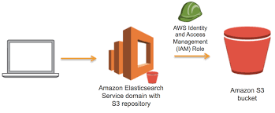

EFS(Elastic File System) Amazon Elastic File System (Amazon EFS) provides a simple, scalable, fully managed elastic NFS file system for use with AWS Cloud services and on-premises resources. It is built to scale on demand to petabytes without disrupting applications, growing and shrinking automatically as you add and remove files, eliminating the need to provision and manage capacity to accommodate growth. Amazon EFS offers two storage classes: the Standard storage class, and the Infrequent Access storage class (EFS IA). EFS IA provides price/performance that's cost-optimized for files not accessed every day. By simply enabling EFS Lifecycle Management on your file system, files not accessed according to the lifecycle policy you choose will be automatically and transparently moved into EFS IA. The EFS IA storage class costs only $0.025/GB-month*.
EKS(Elastic Kubernete Service) Amazon Elastic Kubernetes Service (Amazon EKS) is a fully managed Kubernetes service. Customers such as Intel, Snap, Intuit, GoDaddy, and Autodesk trust EKS to run their most sensitive and mission critical applications because of its security, reliability, and scalability.
 S3 Amazon Simple Storage Service (Amazon S3) is an object storage service that offers industry-leading scalability, data availability, security, and performance.